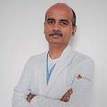

Dr. Rakesh Khera
Kidney & Urology Institute
Dr. Rakesh Khera is the Associate Director of Urologic Cancer Surgery (Urologic Oncology) at Medanta - The Medicity. He brings in expertise from one of the top urological cancer centres in the world - The Roswell Park Cancer Institute, New York, USA. He has a vast experience of having performed over 1000 robotic & laparoscopic surgeries for prostate, bladder and kidney cancer. His endeavours are focused towards providing patients the most advanced & comprehensive Cancer procedures & care available only at leading international institutions. Besides robotic surgery, Dr. Khera is also an expert in other laparoscopic and endoscopic surgeries for urological cancers. He also has the distinctive largest single unit experience in the world of conducting more than 1500 Laparoscopic Donor Nephrectomies. He started "Belly-button," virtually scarless surgery (LESS) & Single incision laparoscopic surgery (SILS) at Medanta. Dr Khera is also credited with running the Training programme for all urologists at Medanta & visiting urologists from various parts of the country & abroad. This includes fellowship training programmes for endourology & kidney transplant.
Medical Qualification

MBBS, MS (Surgery) Mahatma Gandhi Institute of Medical Sciences, Wardha Maharashtra 1994
M.Ch (Urology) Grant Medical College & JJ group of hospitals, Mumbai 2000
DNB (Urology) National Board of Exam, New Delhi 2000
Robotic Surgical Training Rosewell Park Cancer Institute,NY, USA
Department Institute
Kidney & Urology Institute
Expertise
Robotics & minimally invasive surgery for kidney, bladder & prostate
Uro-oncology
Laparoscopy & minimally invasive surgery for stone disease & prostate problems
Doctor's Experience
Medanta - The Medicity, Gurgaon Associate Director 2012 - Till date
Medanta- The Medicity, Gurgaon Senior Consultant 2012-2009
Fortis Hospital, New Delhi Consultant 2006 - 2009
Apollo Hospital, New Delhi Consultant 2000 - 2006
Grant Medical College, Mumbai Chief Resident 1996 - 2000
Mahatma Gandhi Institute of Medical Sciences Maharashtra Lecturer 1995 - 1996
Memberships & Certifications
National cancer Registrars association, USA
Urology Society of India
North Zone Urology Society of India
Indian Medical Associationb
Indian Society of Organ Transplantation
Awards & Accomplishments
Best Poster Prize USICON ,Pune 2013
Robotic Surgery Training Rosewell Park Cancer Institute,NY, USA 2012
ISOT Best Poster Best Poster Prize 2006
NZUSICON Best Paper Best Paper Prize 2004
MGIMS Silver Medal First in Anatomy in University Exam 1987
MGIMS Silver Medal First in Physiology in University Exam 1987
MGIMS Silver Medal Second in University Exam in 1ST MBBS Professional rendered 1987
Publications
Trans-sinus fat laparoscopic partial nephrectomy for parahilar tumors Indian J Urol. 2011 Jul;27(3):422-3
Laparoscopic Pyeloplasty using the Post Anastomotic Dismemberment method: Technique and results J Endourol 2009; 23: 89-96
- The indwelling ureteric stent: a 'friendly' procedure with unfriendly high morbidity BJU Int. 2000 Oct;86(6):757-8
Antegrade JJ-stenting after percutaneous renal procedures: The reverse zebra technique Indian J Urol. 2001, Volume 17
- Endoscopy assisted Freyers prostatectomy : a safer technique Tech Urol. 2000 feb
Inline tug on a through & through guide wire to reposition open ended ureteric catheter during PCNL Tech Urol. 1999;6 (1) : 37
Vaginal mucosal vaccine for recurrent urinary tract infections. Indian j Urol. 2007; 23: 335-6
Early detection of prostate cancer MGIMS J 1999;5: 37
Nanobacteria - is it the cause of urinary calculi MGIMS J 2001;6(1):48
aparoscopic Live donor nephrectomy : trends in donor morbidity Indian Journal of Transplantation Jan 2011
Right laparoscopic donor nephrectomy : Our technique Indian Journal of Transplantation 2011; 1: 9-45
A prospective randomized study of early versus late removal of dj stents after renal transplants and its outcome Indian Journal of Transplantation 2012
Laparoscopic guided URS with post anastomotic dismembered (PAD) pyeloplasty in horseshoe kidney. Indian Journal of Urology Jan 2011
Urinary continence outcomes with modified apical dissection of prostate in minimally invasive radical prostatectomy (MIRP) Indian Journal of Urology Jan 2010
Posterior bladder and seminal vesicle dissection during minimally invasive radical prostatectomy (MIRP - laparoscopic or robotic). Indian Journal of Urology Jan 2010
Laparoscopic radical cystectomy in elderly - hype or a practical solution? Indian Journal of Urology Jan 2010
Laparoscopic partial nephrectomy; managing para hilar tumors in morbidly obese with chronic kidney disease. Indian Journal of Urology Jan 2010
Trans sinus fat partial nephrectomy for para hilar tumors. Indian Journal of Urology Jan 2010
Technique of suprapubic single port transvesical laparoscopic control and mobilization of lower ureter during radical nephroureterectomy for upper tract transitional cell carcinoma. J Endourol 2008
Laparoscopic partial nephrectomy for parahilar renal tumors: Technique with initial cortical division and sinus dissection under vision J Endourol 2008